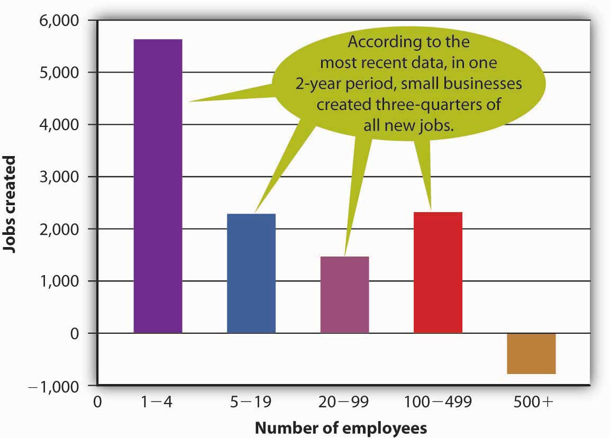
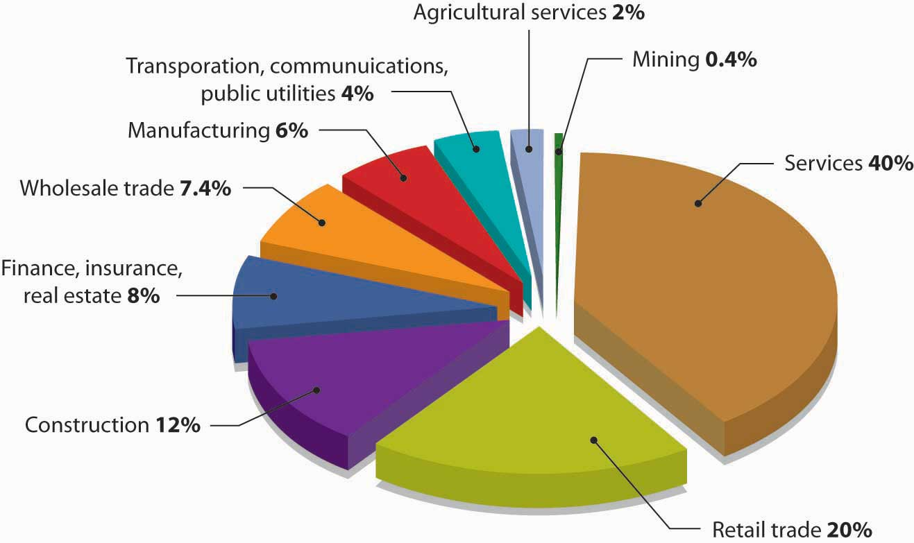
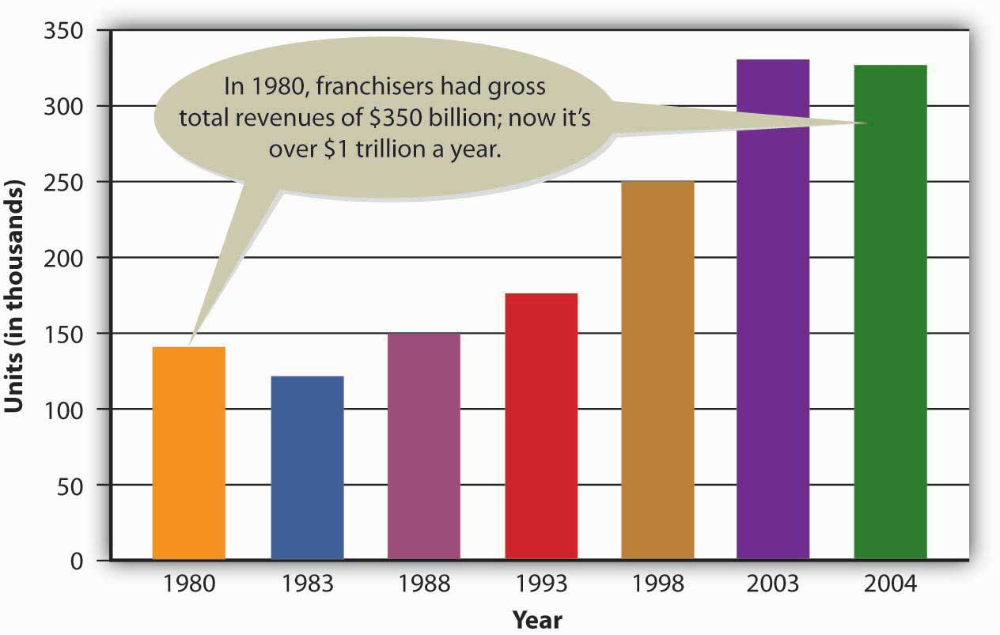
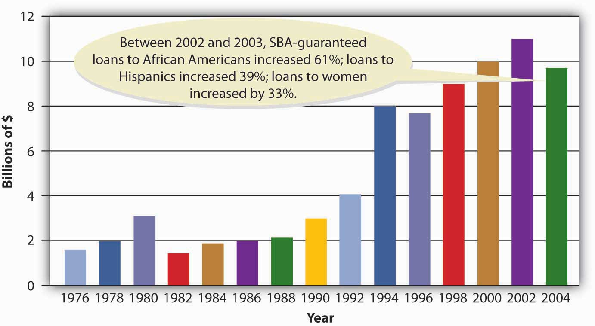

One balmy San Diego evening in 1993, Mary and Rick Jurmain were watching a TV program about teenage pregnancy.This vignette is based on the following sources: Realityworks Inc., “About Us,” Realityworks, http://www.realityworks.com/aboutus.html (accessed October 4, 2008); Realityworks Inc., “RealCare Baby,” Realityworks (2008), http://www.realityworks.com/realcare/realcarebaby.html (accessed October 4, 2008); “Realityworks Infant Simulator and RealCare Parenting Program,” Horizons Solutions Site (August 17, 2007), http://www.solutions-site.org/artman/publish/article_47.shtml (accessed October 4, 2008); Brenda Bredahl, “Bringing Up Baby,” BNET.com, Corporate Report Wisconsin, January 2004, http://findarticles.com/p/articles/mi_qa5426/is_/ai_n21343525 (accessed October 7, 2008); “Have a Baby? I Think I’ll Think It Over,” Horizons Solutions Site (1998), http://www.solutions-site.org/kids/stories/KScat3_sol72.htm (accessed October 4, 2008); “‘Baby’ Helps Teens Think It Over!” Education World, May 25, 1998, http://www.education-world.com/a_curr/curr077.shtml (accessed October 6, 2008); Kate Stone Lombardi, “Doll Gives a Taste of Real Life,” New York Times, May 24, 1998, http://query.nytimes.com/gst/fullpage.html?res= 9B05E3DC1231F930A3575BC0A962958260 (accessed October 6, 2008); J. F. L., MD, “Dolls from Hell,” Pediatrics 97, no. 3 (March 1996), http://pediatrics.aapublications.org/cgi/content/abstract/97/3/317 (accessed October 6, 2008); Deborah L. Cohen, “Bringing Up Baby,” Education Week, November 16, 1994, http://www.edweek.org/ew/articles/1994/11/16/11baby.h14.html (accessed October 6, 2008); “This Doll Tells the Young to Hold Off,” New York Times, August 3, 1994, http://query.nytimes.com/gst/fullpage.html?res= 9B05E3DC1231F930A3575BC0A962958260 (accessed October 6, 2008). To simulate the challenge of caring for an infant, teens on the program were assigned to tend baby-size sacks of flour. Rick, a father of two young children, remarked that trundling around a sack of flour wasn’t exactly a true-to-life experience. In particular, he argued, sacks of flour simulated only abnormally happy babies—babies who didn’t cry, especially in the middle of the night. Half-seriously, Mary suggested that her husband—a between-jobs aerospace engineer—build a better baby, and within a couple of weeks, a prototype was born. Rick’s brainchild was a bouncing 6.5-pound bundle of vinyl-covered joy with an internal computer to simulate infant crying at realistic, random intervals. He also designed a drug-affected model to simulate tremors from withdrawal, and each model monitored itself for neglect or ill treatment.
The Jurmains patented Baby Think It Over (aka BTIO) and started production in 1994 as Baby Think It Over Inc. Their first “factory” was their garage, and the “office” was the kitchen table—“a little business in a house,” as Mary put it. With a boost from articles in USA Today, Newsweek, Forbes, and People—plus a “Product of the Year” nod from Fortune—news of the Jurmains’ “infant simulator” eventually spread to the new company’s targeted education market, and by 1998, some forty thousand simulators had been babysat by more than a million teenagers in nine countries. By that time, the company had moved to Wisconsin, where it had been rechristened BTIO Educational Products Inc. to reflect an expanded product line that now includes not only dolls and equipment, like the Shaken Baby Syndrome Simulator, but also simulator-based programs like ySTART Addiction Education and Realityworks Pregnancy Profile. BTIO was retired and replaced by the new and improved RealCare Baby and, ultimately, by RealCare Baby II–plus, which requires the participant to determine what the “baby” needs when it cries and downloads data to record mishaps (such as missed-care events) and misconduct (like baby shaking). If RealCare Baby II–plus shows signs of fatigue, you can plug him or her into the nearest wall outlet. In 2003, the name of the Jurmains’ company was changed once again, this time to Realityworks Inc. The change, explains the company Web site, reflects its decision “to focus on what the company does best—providing realistic learning experiences.”
The Jurmains
(click to see video)Mary and Rick discuss the origins of Realityworks Inc.
In developing BTIO and Realityworks Inc., the Jurmains were doing what entrepreneurs do (and doing it very well). In fact, Mary was nominated three times for the Ernst & Young Entrepreneur of the Year Award and named 2001 Wisconsin Entrepreneurial Woman of the Year by the National Association of Women Business Owners. So what, exactly, is an entrepreneur? What does an entrepreneur do? According to one definition, an entrepreneur is an “individual who starts a new business,” and that’s true as far as it goes. Another definition identifies an entrepreneur as someone who uses “resources to implement innovative ideas for new, thoughtfully planned ventures”Canadian Foundation for Economic Education, “Glossary of Terms,” Mentors, Ventures & Plans (2008), http://www.mvp.cfee.org/en/glossary.html (accessed October 7, 2008). which is also true as far as it goes. But an important component of a satisfactory definition is still missing. To appreciate fully what it is, let’s go back to the story of the Jurmains, for whom entrepreneurship seems to have worked out quite well. We hasten to point out that, in 1993, the Jurmains were both unemployed—Rick had been laid off by General Dynamics Corp., and Mary by the San Diego Gas and Electric Company. While they were watching the show about teenagers and flour sacks, they were living off a loan from her father and the returns from a timely investment in coffee futures. Rick recalls that the idea for a method of creating BTIO came to him while “I was awake in bed, worrying about being unemployed.” He was struggling to find a way to feed his family. He had to make the first forty simulators himself, and at the end of the first summer, BTIO had received about four hundred orders—a promising start, perhaps, but, at $250 per baby (less expenses), not exactly a windfall. “We were always about one month away from bankruptcy,” recalls Mary.
At the same time, it’s not as if the Jurmains started up BTIO simply because they had no “conventional” options for improving their financial prospects. Rick, as we’ve seen, was an aerospace engineer, and his résumé includes work on space-shuttle missions at NASA. Mary, who has not only a head for business but also a degree in industrial engineering, has worked at the Johnson Space Center. Therefore, the idea of replacing a sack of flour with a computer-controlled simulator wasn’t necessarily rocket science for the couple. But taking advantage of that idea—choosing to start a new business and to commit themselves to running it—was a risk. Risk taking is the missing component that we’re looking for in a definition of entrepreneurship, and so we’ll define an entrepreneurIndividual who identifies a business opportunity and assumes the risk of creating and running a business to take advantage of it. as someone who identifies a business opportunity and assumes the risk of creating and running a business to take advantage of it.
If we look a little more closely at the definition of entrepreneurship, we can identify three characteristics of entrepreneurial activity:Adapted from Marc J. Dollinger, Entrepreneurship: Strategies and Resources, 3rd ed. (Upper Saddle River, NJ: Prentice Hall, 2003), 5–7.
It isn’t hard to recognize all three of these characteristics in the entrepreneurial experience of the Jurmains. They certainly had an innovative idea. But was it a good business idea? In a practical sense, a “good” business idea has to become something more than just an idea. If, like the Jurmains, you’re interested in generating income from your idea, you’ll probably need to turn it into a product—something that you can market because it satisfies a need. If—again, like the Jurmains—you want to develop a product, you’ll need some kind of organization to coordinate the resources necessary to make it a reality (in other words, a business). Risk enters the equation when, like the Jurmains, you make the decision to start up a business and when you commit yourself to managing it.
Figure 5.1
Do you think Chris DeWolfe knew what a huge success MySpace would be when he and Tom Anderson started their Web site?
Source: http://commons.wikimedia.org/wiki/File:Chris_DeWolfe.jpg accessed Feb. 2, 2009.
So what about you? Do you ever wonder what it would be like to start your own business? Maybe you want to try your hand at entrepreneurship. You could be the next Tom Anderson or Chris DeWolfe, founders of MySpace. Or the next David Marcks, a golf course manager who came up with the idea of Geese Police—training dogs to chase geese from golf courses, corporate parks, and municipal playgrounds.Isabel M. Isidro, “Geese Police: A Real-Life Home Business Success Story,” PowerHomeBiz.com (2008), http://www.powerhomebiz.com/OnlineSuccess/geesepolice.htm (accessed October 8, 2008). Or even the next Pierre Omidyar, the French-born software developer who built an online venue for person-to-person auctions, known as eBay.See American Academy of Achievement, “Pierre Omidyar,” Academy of Achievement (November 9, 2005), http://www.achievement.org/autodoc/page/omi0bio-1 (accessed October 8, 2008). You might even turn into a “serial entrepreneur,” like Dan Bricklin, whose résumé so far includes four software companies: Software Arts (founded to market his own invention, an electronic spreadsheet calculator), Software Garden (software for monitoring Web servers), Slate Corp. (software for pen computers), and Trellix Corp. (software for building and hosting Web sites).Dan Bricklin, Dan Bricklin’s Web site, http://www.bricklin.com (accessed October 8, 2008); Dan Bricklin, “Natural-Born Entrepreneur—Lessons of a Serial Entrepreneur,” Working Knowledge (October 22, 2001), http://hbswk.hbs.edu/archive/2569.html (accessed October 8, 2008).
For the sake of argument, let’s say that you would like to know a little more about going into business for yourself—in which case, you’ll want some answers to questions like the following:
In this chapter, we’ll provide some answers to questions like these.
Let’s say that you are interested in the idea of going into business for yourself. Not everyone, of course, has a desire to take the risks and put in the work involved in starting up a business. What sort of characteristics distinguishes those who do from those who don’t want to start a business? Or, more to the point, why do some people actually follow through on the desire to start up their own businesses? According to the Small Business Administration (SBA)Government agency that helps prospective owners set up small businesses, obtain financing, and manage ongoing operations., a government agency that provides assistance to small businesses, the most common reasons for starting a business are the following:U.S. Small Business Administration, “First Steps: How to Start a Small Business,” http://www.sba.gov/starting/indexsteps.html (accessed April 21, 2006).
The SBA points out, though, that these are likely to be advantages only “for the right person.” And how do you know if you’re one of the “right people”? The SBA suggests that you assess your strengths and weaknesses by asking yourself a few relevant questions:U.S. Small Business Administration, “Is Entrepreneurship for You?” http://www.sba.gov/smallbusinessplanner/plan/getready/SERV_SBPLANNER_ISENTFORU.html (accessed October 26, 2008).
Later in this chapter, we’ll take up the question of why businesses fail, but since we’re still talking about the pros and cons of starting a business in the first place, we should consider one more issue: in addition to the number of businesses that start and then fail, a huge number of business ideas never even make it to the grand opening. One business analyst cites four reservations (or fears) that prevent people from starting businesses:Shari Waters, “Top Four Reasons People Don’t Start a Business,” About.com, http://retail.about.com/od/startingaretailbusiness/tp/overcome_fears.htm (accessed October 8, 2008).
If you’re still interested in going into business for yourself, feel free to regard these potential drawbacks as mere obstacles to be overcome by a combination of planning and creative thinking.
Though most entrepreneurial ventures begin as small businesses, not all small business owners are entrepreneurs. Generally speaking, we can divide small businesses into three types:Adapted from Bruce R. Barringer and R. Duane Ireland, Entrepreneurship: Successfully Launching New Ventures, 2nd ed. (Upper Saddle River, NJ: Pearson Education, 2008), 16.
There are three characteristics of entrepreneurial activity:
According to the SBA, a government agency that provides assistance to small businesses, there are five advantages to starting a business—“for the right person”:
To determine whether you’re one of the “right people” to exploit the advantages of starting your own business, the SBA suggests that you assess your strengths and weaknesses by asking yourself the following questions:
Though most entrepreneurial ventures begin as small businesses, not all small business owners are entrepreneurs. Generally speaking, we can divide small businesses into three types:
(AACSB) Analysis
Do you have what it takes to be an entrepreneur? To find out, start by reviewing the following list of characteristics commonly attributed to entrepreneurs:
We’ll also add that entrepreneurs usually start small. They begin with limited resources and build their businesses through personal effort. At the end of the day, their success depends on their ability to manage and grow the organization that they created to implement their vision.
Now use the following three-point scale to indicate the extent to which each of these attributes characterizes you:
Based on your responses, do you think that you have the attributes of an entrepreneur? Do you think you could be a successful entrepreneur? Why, or why not?
To assess the value of small businesses to the U.S. economy, we first need to know what constitutes a small business. Let’s start by looking at the criteria used by the Small Business Administration. According to the SBA, a small businessAccording to the SBA, a business that is independently operated, exerts little influence in its industry, and employs fewer than five hundred people. is one that is independently owned and operated, exerts little influence in its industry, and (with a few exceptions) has fewer than five hundred employees.U.S. Small Business Administration, “What Is Small Business?” (2008), http://www.sba.gov/services/contractingopportunities/sizestandardstopics/size/index.html (accessed October 9, 2008).
Small business constitutes a major force in the U.S. economy. There are nearly twenty-seven million small businesses in this country, and they generate about 50 percent of our gross domestic product (GDP).Office of Advocacy, U.S. Small Business Administration, The Small Business Economy for Data Year 2006: A Report to the President (December 2007), http://www.sba.gov/advo/research/sb_econ2007.pdf (accessed October 9, 2008). Indeed, if all the small businesses in the United States seceded and formed their own economy, it would be the third-largest economy in the world (behind the United States itself and China).Thomas W. Zimmerer and Norman M. Scarborough, Essentials of Entrepreneurship and Small Business Management, 5th ed. (Upper Saddle River, NJ: Pearson Education, 2008), 27. The millions of individuals who have started businesses in the United States have shaped the business world as we know it today. Some small business founders like Henry Ford and Thomas Edison have even gained places in history. Others, including Bill Gates (Microsoft), Sam Walton (Wal-Mart), Steve Jobs (Apple Computer), Michael Dell (Dell, Inc.), Steve Case (AOL), Pierre Omidyar (eBay), and Larry Page and Sergey Brin (Google), have changed the way business is done today. Still millions of others have collectively contributed to our standard of living.
Aside from contributions to our general economic well-being, founders of small businesses also contribute to growth and vitality in specific areas of economic and socioeconomic development. In particular, small businesses do the following:
In addition, they complement the economic activity of large organizations by providing them with components, services, and distribution of their products.
Let’s take a closer look at each of these contributions.
The majority of Americans first entered the business world by working for small businesses, and today, more than half of all U.S. adults either are self-employed or work for businesses with fewer than five hundred employees.Terry Bibbens, “A New View of Government, University, and Industry Partnerships” (U.S. Small Business Administration, Office of Advocacy, February 2000), 2, http://www.sba.gov/advo/laws/test99_0804.pdf (accessed October 10, 2008). These enterprises are constantly creating jobs and providing opportunities for a vast number of workers. Figure 5.3 "Net New Jobs by Firm Size, 1992–1996" shows just how many jobs were created by small (and very small) firms between 1992 and 1996, the last year for which there are data on the actual number of jobs created by small firms. In the decade between 1995 and 2005, small businesses also created 60 percent to 80 percent of net new jobs annually, including 40 percent of high-tech workers (scientists, engineers, computer workers). Their share of total employment remains steady at about 51 percent, because many small firms, as they add employees, naturally grow into large firms.Terry Bibbens, “A New View of Government, University, and Industry Partnerships” (U.S. Small Business Administration, Office of Advocacy, February 2000), 2, http://www.sba.gov/advo/laws/test99_0804.pdf (accessed October 10, 2008), 3.
Figure 5.3 Net New Jobs by Firm Size, 1992–1996
Given the financial resources available to large businesses, you’d expect them to introduce virtually all the new products that hit the market. According to the SBA, however, 40 percent of all U.S. corporate patents come from small businesses, self-employed inventors, and inventors working for small companies.CHI Research Inc., “Small Serial Innovators: The Small Firm Contribution to Technical Change” (U.S. Small Business Administration, Office of Advocacy, March 2003), 11, http://www.sba.gov/advo/research/rs225tot.pdf (accessed October 10, 2008). Over the years, the list of important innovations by small firms has included the airplane and air-conditioning, the defibrillator and DNA fingerprinting, oral contraceptives and overnight national delivery, the safety razor, strobe lights, and the zipper.William J. Baumol, “Small Firms: Why Market-Driven Innovation Can’t Get Along without Them” (U.S. Small Business Administration, Office of Advocacy, December 2005), table 8.1, 186, http://www.sba.gov/advo/research/sbe_05_ch08.pdf (accessed October 10, 2008).
Small business owners are also particularly adept at finding new ways of doing old things. In 1994, for example, a young computer-science graduate working on Wall Street came up with the novel idea of selling books over the Internet. During the first year of operations, sales at Jeff Bezos’s new company—Amazon.com—reached half a million dollars. In less than ten years, annual sales had topped $3 billion. Not only did his innovative approach to online retailing make Bezos enormously rich, but it also established a viable model for the e-commerce industry.
Why are small businesses so innovative? For one thing, they tend to offer environments that appeal to individuals with the talent to invent new products or improve the way things are done. Fast decision making is encouraged, their research programs tend to be focused, and their compensation structures typically reward top performers. According to one SBA study, the supportive environments of small firms are roughly thirteen times more innovative per employee than the less innovation-friendly environments in which large firms traditionally operate.William J. Baumol, “Small Firms: Why Market-Driven Innovation Can’t Get Along without Them” (U.S. Small Business Administration, Office of Advocacy, December 2005), http://www.sba.gov/advo/research/sbe_05_ch08.pdf (accessed October 10, 2008), 187.
The success of small businesses in fostering creativity has not gone unnoticed by big businesses. In fact, many large companies have responded by downsizing to act more like small companies. Some large organizations now have separate work units whose purpose is to spark innovation. Individuals working in these units can focus their attention on creating new products that can then be developed by the company.
Small business is the portal through which many people enter the economic mainstream. Business ownership allows individuals, including women and minorities, to achieve financial success, as well as pride in their accomplishments. While the majority of small businesses are still owned by white males, the past two decades have seen a substantial increase in the number of businesses owned by women and minorities. Figure 5.4 "Businesses Owned by Women and Minorities" gives you an idea of how many American businesses are owned by women and minorities, and indicates how much the numbers grew between 1982 and 2002, the last year for which there are reliable data.Ying Lowrey, “Women in Business, 2006: A Demographic Review of Women’s Business Ownership” (U.S. Small Business Administration, Office of Advocacy, August 2006), http://www.sba.gov/advo/research/rs280tot.pdf (accessed October 10, 2008); Ying Lowrey, “Minorities in Business” (U.S. Small Business Administration, Office of Advocacy, April 2007), http://www.sba.gov/advo/research/rs298tot.pdf (accessed October 10, 2008).
Figure 5.4 Businesses Owned by Women and Minorities
Small firms complement large firms in a number of ways. They supply many of the components needed by big companies. For example, a substantial portion of the mind-boggling $90 billion paid annually by General Motors to parts suppliers goes to small businesses. Small firms also provide large ones with such services as accounting, legal, and insurance. Many small firms provide outsourcing services to large firms—that is, they hire themselves out to help with special projects or handle certain business functions. A large firm, for example, might hire a small one to handle its billing or collection services or to manage its health care benefits. A large company might contract with a small information technology firm to manage its Web site or oversee software upgrades.
Small companies provide another valuable service to large companies by acting as sales agents for their products. For example, automobile dealerships, which are generally small businesses, sell vehicles for the big car makers. Local sporting goods stores sell athletic shoes made by industry giants, such as Adidas and Nike. Your corner deli sells products made by large companies, such as Coca-Cola and Frito-Lay.
The nearly twenty-seven million small businesses in the United States generate about 50 percent of our GDP. They also contribute to growth and vitality in several important areas of economic and socioeconomic development. In particular, small businesses do the following:
How “small” is a small business? If a substantial portion of small businesses in the United States suddenly closed, what would be the impact on the U.S. economy? How would all these closings affect workers, consumers, and other businesses?
If you want to start a new business, you probably should avoid certain types of businesses. You’d have a hard time, for example, setting up a new company to make automobiles or aluminum, because you’d have to make tremendous investments in property, plant, and equipment, and raise an enormous amount of capital to pay your workforce.
Fortunately, plenty of opportunities are still available if you’re willing to set your sights a little lower. Many types of businesses require reasonable initial investments, and not surprisingly, these are the ones that usually present attractive small business opportunities.
We’ll have more to say about industries and how to analyze them in later chapters. Here, we’ll simply define an industry as a group of companies that compete with one another to sell similar products, and we’ll focus on the relationship between a small business and the industry in which it operates. First, we’ll discuss the industries in which small businesses tend to be concentrated. To do this, we’ll divide businesses into two broad types of industries, or sectors: the goods-producing sector and the service-producing sector.
About 80 percent of small businesses in the United States are concentrated in the service-producing sector. Of these, about 25 percent are in retailing, 10 percent in wholesaling, and 35 percent in professional and business services. Of the 20 percent of all small businesses in the goods-producing sector, nearly two thirds are in construction and the other one third in manufacturing.John Case, “What Businesses Are Small Companies Really In—And Where Are They Scarce,” Inc.com (May 2001), http://www.inc.com/magazine/20010515/22612.html (accessed October 11, 2008) (October 11, 2008).
The high concentration of small businesses in the service-producing sector reflects the makeup of the overall U.S. economy. Over the past forty years, the service-producing sector has been growing at an impressive rate. In 1960, for example, the goods-producing sector accounted for 38 percent of GDP, the service-producing sector for 62 percent. By 2000, the balance had shifted dramatically, with the goods-producing sector accounting for only 23 percent of GDP, while the service-producing sector had grown to 77 percent.Laura Baughman, “Why Congress Should Fund Better Services Data,” Sitrends.org (May 6, 2002), http://www.sitrends.org/ideas/expert.asp?EXPERT_ID=49 (accessed October 11, 2008) (October 11, 2008).
The largest areas of the goods-producing sector are construction and manufacturing. Construction businesses are often started by skilled workers, such as electricians, painters, plumbers, and home builders. They tend to be small and generally work on local projects. Though manufacturing is primarily the domain of large businesses, there are exceptions. BTIO/Realityworks, for example, is a manufacturing enterprise (components come from Ohio and China, and assembly is done in Wisconsin).
Another small manufacturer is Reveal Entertainment, which was founded in 1996 to make and distribute board games. Founder Jeffrey Berndt started with a single award-winning game—a three-dimensional finance and real estate game called “Tripoly”—and now boasts a product line of dozens of board games. There are strategy games, like “Squad Seven,” which uses a CD soundtrack to guide players through a jungle in search of treasure; children’s games, like “Portfolio Junior,” which teaches kids the rudiments of personal finances; and party games, like “So Sue Me,” in which players get to experience the fun side of suing their neighbors and taking their possessions.Go to Reveal Entertainment at http://www.revealgames.com (accessed October 11, 2008) (October 11, 2008).
Many small businesses in this sector are retailers—they buy goods from other firms and sell them to consumers, in stores, by phone, through direct mailings, or over the Internet. In fact, entrepreneurs are turning increasingly to the Internet as a venue for start-up ventures. Take Tony Roeder, for example, who had a fascination with the red Radio Flyer wagons that many of today’s adults had owned as children. In 1998, he started an online store through Yahoo! to sell red wagons from his home. In three years, he turned his online store into a million-dollar business. Internet entrepreneurship was also attractive to Sean Lundgren and Todd Livdahl—two computer engineers who gave up successful careers at Disney to turn their fascination with video games and DVDs into an online business. To their delight, their small start-up venture, a CD and DVD retailer that they call Sneetch.com, generated sales of $1.2 million during its first year of operation.Isabel Isidro, “What Works on the Web: 12 Lessons from Successful Home-Based Online Entrepreneurs,” PowerHomeBiz.com (2008), http://www.powerhomebiz.com/vol63/whatworks.htm (accessed October 12, 2008) (October 12, 2008).
Other small business owners in this sector are wholesalers—they sell products to businesses that buy them for resale or for company use. A local bakery, for example, is acting as a wholesaler when it sells desserts to a restaurant, which then resells them to its customers. A small business that buys flowers from a local grower (the manufacturer) and resells them to a retail store is another example of a wholesaler.
A high proportion of small businesses in this sector provide professional, business, or personal services. Doctors and dentists are part of the service industry, as are insurance agents, accountants, and lawyers. So are businesses that provide personal services, such as dry cleaning and hairdressing.
David Marcks, for example, entered the service industry about fourteen years ago when he learned that his border collie enjoyed chasing geese at the golf course where he worked. Anyone who’s been on a golf course recently knows exactly what the goose problem is. While they are lovely to look at, they answer the call of nature on tees, fairways, and greens. That’s where Marcks’s company, Geese Police, comes in: Marcks employs specially trained dogs to chase the geese away. He now has twenty-seven trucks, thirty-two border collies, and five offices. Golf courses account for only about 5 percent of his business, as his dogs now patrol corporate parks and playgrounds as well.Isabel M. Isidro, “Geese Police: A Real-Life Home Business Success Story,” PowerHomeBiz.com (2008), http://www.powerhomebiz.com/OnlineSuccess/geesepolice.htm (accessed October 8, 2008).
Figure 5.6 "Small Business by Industry" provides a more detailed breakdown of small businesses by industry.
Figure 5.6 Small Business by Industry
An industry is a group of companies that compete with one another to sell similar products. There are two broad types of industries, or sectors:
Why are most small businesses found in the service-producing sector? Identify five small service-producing businesses that you patronize frequently. What kinds of small businesses are found in the goods-producing sector? What small goods-producing firms do you do business with regularly?
Do you want to be a business owner someday? Before deciding, you might want to consider the following advantages and disadvantages of business ownership.Small Business Development Center, “Pros and Cons of Owning a Business,” http://72.14.203.104/u/siu?q=cache:DFSPVtmg7j0J:http://www.siu.edu/sbdc/buscheck.htm+pros+and+cons+of+owning+a+business&hl=en&gl=us&ct=clnk&cd=1&ie=UTF-8 (accessed April 21, 2006).
Being a business owner can be extremely rewarding. Having the courage to take a risk and start a venture is part of the American dream. Success brings with it many advantages:
As the little boy said when he got off his first roller-coaster ride, “I like the ups but not the downs!” Here are some of the risks you run if you want to start a small business:
In spite of these and other disadvantages, most small business owners are pleased with their decision to start a business. A survey conducted by the Wall Street Journal and Cicco and Associates indicates that small business owners and top-level corporate executives agree overwhelmingly that small business owners have a more satisfying business experience. Interestingly, the researchers had fully expected to find that small business owners were happy with their choices; they were, however, surprised at the number of corporate executives who believed that the grass was greener in the world of small business ownership.Cicco and Associates Inc., “Type E Personality—Happy Days—Entrepreneurs Top Satisfaction Survey,” Entrepreneur.com, http://entrepreneur-online.com/mag/article/0,1539,226838–-3-,00.html (accessed April 21, 2006).
Figure 5.7 The Entrepreneur’s Workweek
There are several advantages that, generally speaking, come with success in business ownership:
There are also a number of potential disadvantages to consider in deciding whether to start a small business:
(AACSB) Analysis
First, identify five advantages of small business ownership. Next, rank these advantages according to their importance to you. Why did you rank them as you did? What factors discourage individuals from small business ownership? Indicate which of these factors might discourage you from starting a business. Explain why.
(AACSB) Analysis
Because you’re convinced that the best way to get rich is to work for yourself, you’re thinking about starting your own business. You have an idea and $100,000 that you just inherited from a great-aunt. You even have a location: Palo Alto, California, which (according to a Forbes magazine article) is the best place in the United States to get rich. But there’s a downside: to move to California and start your own business, you’ll have to drop out of college. What financial risks should you consider in making your decision? What are your chances of succeeding with your plan? Are you willing to take the financial risk needed to start a business? Why, or why not? Are you really likely to make more money running your own business than working for someone else?
Starting a business takes talent, determination, hard work, and persistence. It also requires a lot of research and planning. Before starting your business, you should appraise your strengths and weaknesses and assess your personal goals to determine whether business ownership is for you.From Kathleen Allen, “Getting Started in Entrepreneurship,” in Entrepreneurship for Dummies (New York: Wiley, 2001), 46.
If you’re interested in starting a business, you need to make decisions even before you bring your talent, determination, hard work, and persistence to bear on your project. Here are the basic questions you’ll need to address:
After making these decisions, you’ll be ready to take the most important step in the entire process of starting a business: you must describe your future business in the form of a business planFormal document describing a proposed business concept, description of the proposed business, industry analysis, mission statement and core values, a management plan, a description of goods or services, a description of production processes, and marketing and financial plans.—a document that identifies the goals of your proposed business and explains how these goals will be achieved. Think of a business plan as a blueprint for a proposed company: it shows how you intend to build the company and how you intend to make sure that it’s sturdy. You must also take a second crucial step before you actually start up your business: You need to get financing—the money from individuals, banks, or both, that you’ll need to get your business off the ground. (Obviously, if you already have the necessary funds, you’re one of the fortunate few who can skip this step.)
For some people, coming up with a great business idea is a gratifying adventure. For most, however, it’s a daunting task. The key to coming up with a business idea is identifying something that customers want—or, perhaps more importantly, filling an unmet need. Your business will probably survive only if its purpose is to satisfy its customers—the ultimate users of its goods or services. In coming up with a business idea, don’t ask, “What do we want to sell?” but rather, “What does the customer want to buy?”Scott Thurm and Joann S. Lublin, “Peter Drucker’s Legacy Includes Simple Advice: It’s All about the People,” Wall Street Journal (November 14, 2005, B1), http://online.wsj.com/public/article/SB113192826302796041.html?mod=2_1194_3 (accessed April 21, 2006).
To come up with an innovative business idea, you need to be creative. The idea itself can come from various sources. Prior experience accounts for the bulk of new business ideas. Many people generate ideas for industries they’re already working in. Past experience in an industry also increases your chances of success. Take Sam Walton, the late founder of Wal-Mart. He began his retailing career at JCPenney and then became a successful franchiser of a Ben Franklin five-and-dime store. In 1962, he came up with the idea of opening large stores in rural areas, with low costs and heavy discounts. He founded his first Wal-Mart store in 1962, and when he died thirty years later, his family’s net worth was $25 billion.Peter Krass, “Sam Walton: 10 Rules for Building a Successful Business,” http://www.powerhomebiz.com/vol76/walton.htm (accessed April 21, 2006).
Industry experience also gave Howard Schultz, a New York executive for a housewares company, his breakthrough idea. In 1981, Schultz noticed that a small customer in Seattle—Starbucks Coffee, Tea and Spice—ordered more coffeemaker cone filters than Macy’s and many other large customers. So he flew across the country to find out why. His meeting with the owner-operators of the original Starbucks Coffee Co. resulted in his becoming part-owner of the company, and changed his life and the life of coffee lovers forever. Schultz’s vision for the company far surpassed that of its other owners. While they wanted Starbucks to remain small and local, Schultz saw potential for a national business that not only sold world-class-quality coffee beans but also offered customers a European coffee-bar experience. After attempting unsuccessfully to convince his partners to try his experiment, Schultz left Starbucks and started his own chain of coffee bars, which he called Il Giornale (after an Italian newspaper). Two years later, he bought out the original owners and reclaimed the name Starbucks.Howard Schultz and Dori Jones Yang, Pour Your Heart into It (New York: Hyperion, 1997), 24–109.
Other people come up with business ideas because of hobbies or personal interests. This was the case with Nike founder Phil Knight, who was an avid runner. He was convinced that it was possible to make high-quality track shoes that cost less than the European shoes dominating the market at the time. His track experience, coupled with his knowledge of business (Knight holds an MBA from Stanford and worked as an accountant), inspired him to start Nike. Michael Dell also turned a personal interest into a business. From a young age, he was obsessed with taking computers apart and putting them back together again, and it was this personal interest that led to his great business idea. At college, instead of attending classes, he spent his time assembling computers and, eventually, founded Dell Computers.
We will expand on this important topic of idea generation and creativity in other chapters.
As we’ve already seen, you can become a small business owner in one of three ways—by starting a new business, buying an existing one, or obtaining a franchise. Let’s look more closely at the advantages and disadvantages of each option.
The most common—and the riskiest—option is starting from scratch. This approach lets you start with a clean slate and allows you to build the business the way you want. You select the goods or services that you’re going to offer, secure your location, and hire your employees, and then it’s up to you to develop your customer base and build your reputation. This is the path taken by Dean Kamen when he formed a company to design and market the Segway, and also by Tom Anderson and Chris DeWolfe when they started MySpace. Of course, for every Kamen, Anderson, and DeWolfe, there are hundreds of individuals whose venture into business was unsuccessful.
If you decide to buy an existing business, some things will be easier. You’ll already have a proven product, current customers, active suppliers, a known location, and trained employees. You’ll also find it much easier to predict the business’s future success. There are, of course, a few bumps in this road to business ownership. First, it’s hard to determine how much you should pay for a business. You can easily determine how much things like buildings and equipment are worth, but how much should you pay for the fact that the business already has steady customers?
In addition, a business, like a used car, might have performance problems that you can’t detect without a test drive (an option, unfortunately, that you don’t get when you’re buying a business). Perhaps the current owners have disappointed customers; maybe the location isn’t as good as it used to be. You might inherit employees that you wouldn’t have hired yourself. Finally, what if the previous owners set up a competing business that draws away their former—and your current—customers?
Lastly, you can buy a franchiseForm of business ownership in which a franchiser (a seller) grants a franchisee (a buyer) the right to use a brand name and to sell its products or services.. Under this setup, a franchiser (the company that sells the franchise) grants the franchisee (the buyer—you) the right to use a brand name and to sell its goods or services. Franchises market products in a variety of industries, including food, retail, hotels, travel, real estate, business services, cleaning services, and even weight-loss centers and wedding services. There are thousands of franchises, many of which are quite familiar—SUBWAY, McDonald’s, 7-Eleven, Holiday Inn, Budget Car Rental, RadioShack, and Jiffy Lube.
As you can see from Figure 5.9 "The Growth of Franchising, 1980–2004", franchising has become an extremely popular way to do business. A new franchise outlet opens once every eight minutes in the United States, where one in twelve businesses is now a franchise. Franchises employ eight million people and account for 40 percent of all retail sales in this country.“Franchise 500,” Entrepreneur.com—Franchise, http://www.entrepreneur.com/franchises/rankings/franchise500-115608/2005,-1.html (accessed April 21, 2006).
Figure 5.9 The Growth of Franchising, 1980–2004
In addition to the right to use a company’s brand name and sell its products, the franchisee gets help in picking a location, starting and operating the business, and advertising. In effect, you’ve bought a prepackaged, ready-to-go business that’s proven successful elsewhere. You also get ongoing support from the franchiser, which has a vested interest in your success.
Not surprisingly, these advantages don’t come cheaply. Franchises can be very expensive, usually depending on the amount of business that a franchisee is expected to do. KFC franchises, for example, require a total investment of $1.1 million to $1.7 million each. This fee includes the cost of the property, equipment, training, start-up costs, and the franchise fee—a one-time charge for the right to operate as a KFC outlet. McDonald’s is in the same price range ($950,000 to $1.8 million). SUBWAY sandwich shops are more affordable, with expected total investment ranging from $80,000 to $310,000. If you’d prefer teaching dance and exercise classes, you could get a Jazzercise franchise for anywhere from $3,000 to $33,000. If you don’t want to deal in food or dance, you might want to buy a dating service. The Right One® franchises go for an initial investment of $100,000 to $250,000, depending on location.“2008 Franchise 500,” Entrepreneur.com (2008), http://www.entrepreneur.com/franchise500 (accessed October 18, 2008).
In addition to your initial investment, you’ll have to pay two other fees on a monthly basis—a royalty fee (typically from 3 to 12 percent of sales) for continued support from the franchiser and the right to keep using the company’s trade name, plus an advertising fee to cover your share of national and regional advertising. You’ll also be expected to buy your products from the franchiser.Michael Seid and Kay Marie Ainsley, “Franchise Fee—Made Simple,” Entrepreneur.com, http://www.entrepreneur.com/article/0,4621,299085,00.html (accessed April 21, 2006).
Why do would-be business owners like franchises? For one thing, buying a franchise lets you start up under fairly safe conditions, with a proven model for running a company and a permanent support team. You can profit from name recognition without having to develop your own image in the marketplace, and you can be your own boss (as long as you comply with the standards set by the franchiser).
But there are disadvantages. The cost of obtaining and running a franchise can be high, and you have to play by the franchiser’s rules, even when you disagree with them. The franchiser maintains a great deal of control over its franchisees. For example, if you own a fast-food franchise, the franchise agreement will likely dictate the food and beverages you can sell; the methods used to store, prepare, and serve the food; and the prices you’ll charge. In addition, the agreement will dictate what the premises will look like and how they’ll be maintained.
Finally, franchisers don’t always keep their promises. What do you do if the promised advertising or employee training doesn’t materialize? What do you do if you’re forced to make unnecessary and costly alterations to your premises, or the franchising company sets up a competing establishment nearby? What if the franchising company gets bad press, which, in turn, hurts your sales? You always have the option of suing the franchiser, but this is time-consuming and costly. As with any business venture, you need to do your homework before investing in a franchise.
Before starting a business, you need to ask yourself a few basic questions:
You can become a small business owner in one of three ways, each of which has advantages and disadvantages:
(AACSB) Analysis
If business ownership interests you, you can start a new business, buy an existing one, or obtain a franchise. Evaluate the advantages and disadvantages of each option. Which option do you find most appealing, and why? Describe the business you would probably start.
(AACSB) Analysis
How would you like to spend your summer collecting trash in a used pickup? Doesn’t sound very appealing, does it? Would you quit college to do it full time? Probably not. But that’s exactly what Brian Scudamore did. And he got very rich doing it. His summer job turned into the company known as 1-800-GOT-JUNK, one of the fastest-growing franchises in the United States and Canada. Go to http://www.1800gotjunk.com to link to the Web site and learn more about the company. After looking at the Web site, answer the following questions:
As a reward for working hard, take a break and click on the Junk Genie icon on the bottom of the company’s home page (http://www.1800gotjunk.com). Can you figure out the trick? Pass it along to your friends.
If you want to start a business, you must prepare a business plan. This essential document should tell the story of your business concept, provide an overview of the industry in which you will operate, describe the goods or services you will provide, identify your customers and proposed marketing activities, explain the qualifications of your management team, and state your projected income and borrowing needs.
The business plan is a plan or blueprint for the company, and it’s an indispensable tool in attracting investors, obtaining loans, or both. Remember, too, that the value of your business plan isn’t limited to the planning stages of your business and the process of finding start-up money. Once you’ve acquired start-up capital, don’t just stuff your plan in a drawer. Treat it as an ongoing guide to your business and its operations, as well as a yardstick by which you can measure your performance. Keep it handy, update it periodically, and use it to assess your progress.
In developing and writing your business plan, you must make strategic decisions in the areas of management, operations, marketing, accounting, and finance—in short, in all the functional areas of business that we described in Chapter 1 "The Foundations of Business". Granted, preparing a business plan takes a lot of time and work, but it’s well worth the effort. A business plan forces you to think critically about your proposed business and reduces your risk of failure. It forces you to analyze your business concept and the industry in which you’ll be operating, and it helps you determine how you can grab a percentage of sales in that industry.
The most common use of a business plan is persuading investors, lenders, or both, to provide financing. These two groups look for different things. Investors are particularly interested in the quality of your business concept and the ability of management to make your venture successful. Bankers and other lenders are primarily concerned with your company’s ability to generate cash to repay loans. To persuade investors and lenders to support your business, you need a professional, well-written business plan that paints a clear picture of your proposed business.
Though formats can vary, a business plan generally includes the following sections: executive summary, description of proposed business, industry analysis, mission statement and core values, management plan, goods or services and (if applicable) production processes, marketing, global issues, and financial plan. Let’s explore each of these sections in more detail. (Note: More detailed documents and an Excel template are available for those classes in which the optional business plan project is assigned.)
The executive summaryOverview emphasizing the key points of a business plan to get the reader excited about the business’s prospects. is a one- to three-page overview of the business plan. It’s actually the most important part of the business plan: it’s what the reader looks at first, and if it doesn’t capture the reader’s attention, it might be the only thing that he or she looks at. It should therefore emphasize the key points of the plan and get the reader excited about the prospects of the business.
Even though the executive summary is the first thing read, it’s written after the other sections of the plan are completed. An effective approach in writing the executive summary is to paraphrase key sentences from each section of the business plan. This process will ensure that the key information of each section is included in the executive summary.
Here, you present a brief description of the company and tell the reader why you’re starting your business, what benefits it provides, and why it will be successful. Some of the questions to answer in this section include the following:
Because later parts of the plan will provide more detailed discussions of many of these issues, this section should provide only an overview of these topics.
This section provides a brief introduction to the industry in which you propose to operate. It describes both the current situation and the future possibilities, and it addresses such questions as the following:
This portion of the business plan states the company’s mission statement and core values. The mission statementStatement describing an organization’s purpose or mission—its reason for existence—and telling stakeholders what the organization is committed to doing. describes the purpose or mission of your organization—its reason for existence. It tells the reader what the organization is committed to doing. For example, one mission statement reads, “The mission of Southwest Airlines is dedication to the highest quality of customer service delivered with a sense of warmth, friendliness, individual pride, and company spirit.”Southwest Airline’s company Web site, about SWA section, http://www.southwest.com/about_swa/mission.html (accessed October 30, 2008).
Core valuesStatement of fundamental beliefs describing what’s appropriate and important in conducting organizational activities and providing a guide for the behavior of organization members. are fundamental beliefs about what’s important and what is (and isn’t) appropriate in conducting company activities. Core values are not about profits, but rather about ideals. They should help guide the behavior of individuals in the organization. Coca-Cola, for example, intends that its core values—honesty, integrity, diversity, quality, respect, responsibility, and accountability—will let employees know what behaviors are (and aren’t) acceptable.
Management makes the key decisions for the business, such as its legal form and organizational structure. This section of the business plan should outline these decisions and provide information about the qualifications of the key management personnel.
This section dentifies the chosen legal form of business ownership: sole proprietorship (personal ownership), partnership (ownership shared with one or more partners), or corporation (ownership through shares of stock).
It isn’t enough merely to have a good business idea: you need a talented management team that can turn your concept into a profitable venture. This part of the management plan section provides information about the qualifications of each member of the management team. Its purpose is to convince the reader that the company will be run by experienced, well-qualified managers. It describes each individual’s education, experience, and expertise, as well as each person’s responsibilities. It also indicates the estimated annual salary to be paid to each member of the management team.
This section of the management plan describes the relationships among individuals within the company, listing the major responsibilities of each member of the management team.
To succeed in attracting investors and lenders, you must be able to describe your goods or services clearly (and enthusiastically). Here, you describe all the goods and services that you will provide the marketplace. This section explains why your proposed offerings are better than those of competitors and indicates what market needs will be met by your goods or services. In other words, it addresses a key question: What competitive advantage will the company’s goods and services have over similar products on the market?
This section also indicates how you plan to obtain or make your products. Naturally, the write-up will vary, depending on whether you’re proposing a service company, a retailer, or a manufacturer. If it’s a service company, describe the process by which you’ll deliver your services. If it’s a retail company, tell the reader where you’ll purchase products for resale.
If you’re going to be a manufacturer, you must furnish information on product design, development, and production processes. You must address questions such as the following:
This critical section focuses on four marketing-related areas—target market, pricing, distribution, and promotion:
In addition, if you intend to use the Internet to promote or sell your products, also provide answers to these questions:
In this section, indicate whether you’ll be involved in international markets, by either buying or selling in other countries. If you’re going to operate across borders, identify the challenges that you’ll face in your global environment and explain how you’ll meet them. If you don’t plan initially to be involved in international markets, state what strategies, if any, you’ll use to move into international markets when the time comes.
In preparing the financial section of your business plan, specify the company’s cash needs and explain how you’ll be able to repay debt. This information is vital in obtaining financing. It reports the amount of cash needed by the company for start-up and initial operations and provides an overview of proposed funding sources. It presents financial projections, including expected sales, costs, and profits (or losses). It refers to a set of financial statements included in an appendix to the business plan.
Here, you furnish supplemental information that may be of interest to the reader. In addition to a set of financial statements, for example, you might attach the résumés of your management team.
A business plan generally includes the following sections:
(AACSB) Analysis
Let’s start with three givens: (1) college students love chocolate chip cookies, (2) you have a special talent for baking cookies, and (3) you’re always broke. Given these three conditions, you’ve come up with the idea of starting an on-campus business—selling chocolate chip cookies to fellow students. As a business major, you want to do things right by preparing a business plan. First, you identified a number of specifics about your proposed business. Now, you need to put these various pieces of information into the relevant section of your business plan. Using the business plan format described in this chapter, indicate the section of the business plan into which you’d put each of the following:
Being successful as a business owner requires more than coming up with a brilliant idea and working hard. You need to learn how to manage and grow your business. In the process, you’ll face numerous challenges, and your ability to meet them will be a major factor in your success (or failure).“D&B—The Challenges of Managing a Small Business,” http://www.dnbexpress.ca/ChallengesSmallBusiness.html (accessed October 30, 2008). To give yourself a fighting chance in making a success of your business, you should do the following:
If you’ve paid attention to the occupancy of shopping malls over a few years, you’ve noticed that retailers come and go with surprising frequency. The same thing happens with restaurants—indeed, with all kinds of businesses. By definition, starting a business—small or large—is risky, and though many businesses succeed, a large proportion of them don’t. One-third of small businesses that have employees go out of business within the first two years. Some 55 percent never celebrate a fourth anniversary.Amy E. Knaup, “Survival and Longevity in the Business Employment Dynamics Data,” Monthly Labor Review (May 2005): 50–56, http://www.bls.gov/opub/mlr/2005/05/ressum.pdf (accessed October 20, 2008).
Businesses fail for any number of reasons, but many experts agree that the vast majority of failures result from some combination of the following problems:
The Small Business Administration offers an array of programs to help current and prospective small business owners. Services include assistance in developing a business plan, starting a business, obtaining financing, and managing an organization.U.S. Small Business Administration, “Expand Your Business with Programs and Services,” Services, http://www.sba.gov/services/index.html (accessed October 20, 2008).
Through various programs, for example, the SBA is responsible for seeing that small business owners get more than $60 billion a year in financing from lenders and investors. Each year, the SBA 7(a) Loan Guarantee Program helps some forty-three thousand small businesspeople receive loans from private lenders. As you can see from Figure 5.10 "SBA Loan Guarantees, 1976–2004", the amount of money guaranteed by the program has risen considerably in the last thirty years.See Norman M. Scarborough and Thomas W. Zimmerman, Effective Small Business Management, 9th ed. (Upper Saddle River, NJ: Pearson Prentice Hall, 2006), 485–87; U.S. Small Business Administration, “Basic 7(a) Loan Program,” Services, http://www.sba.gov/services/financialassistance/sbaloantopics/7a/index.html (accessed October 20, 2008).
Figure 5.10 SBA Loan Guarantees, 1976–2004
The SBA also offers management and technical-services training. This assistance is available through a number of channels, including the SBA’s extensive Web site, online courses, and training programs. A full array of individualized services is also available. The Small Business Development Center (SBDC), a program of the SBASBA program in which centers housed at colleges and other locations provide free training and technical information to current and prospective small business owners., assists current and prospective small business owners with business problems and provides free training and technical information on all aspects of small business management. These services are available at approximately one thousand locations around the country, many housed at colleges and universities.U.S. Small Business Administration, “Office of Small Business Development Centers: Entrepreneurial Development,” Services, http://www.sba.gov/aboutsba/sbaprograms/sbdc/index.html (accessed October 20, 2008).
If you need individualized advice from experienced executives, you can get it through the Service Corps of Retired Executives (SCORE)SBA program in which a businessperson needing advice is matched with a member of a team of retired executives working as volunteers.. Under the SCORE program, a businessperson needing advice is matched with someone on a team of retired executives who work as volunteers. Together, the SBDC and SCORE help more than nine hundred thousand small businesspersons every year.U.S. Small Business Administration, SCORE—Counselors to America’s Small Businesses, http://www.score.org/index.html (accessed October 20, 2008).
Business owners face numerous challenges, and the ability to meet them is a major factor in success (or failure). As a business owner, you should do the following:
Businesses fail for any number of reasons, but many experts agree that the vast majority of failures result from some combination of the following problems:
(AACSB) Analysis
Would You Like to Own a Sub Shop?
How would you like to own your own sandwich shop? You could start one on your own or buy one that’s already in business, but an easier way might be buying a franchise from SUBWAY, the largest fast-food franchise in the world (even bigger than McDonald’s). SUBWAY began in 1965 when seventeen-year-old Fred DeLuca opened a tiny sandwich shop in Bridgeport, Connecticut, hoping to put himself through college. As it turns out, his venture paid off in more ways than one. By 1974, DeLuca was franchising his business concept, and today, there are more than fifteen thousand SUBWAY franchisees in some seventy-five countries.
Go to http://www.subway.com to link to the SUBWAY Web site and learn more about franchise opportunities with the company. After reviewing the information provided on the company’s Web site, answer the following questions:
Do You Want to Be an Entrepreneur?
Want to learn what it’s like to be an entrepreneur? To help you decide whether life as an entrepreneur might be for you, go to http://entrepreneurs.about.com/od/interviews/null.htm; then link to the “Interview with Entrepreneurs” section of the About.com Web site and review the entrepreneur interviews. Select two entrepreneurs who interest you, and for each, do the following:
After reading the interviews with these two entrepreneurs, answer the following questions:
Term Papers for Sale
You and some fellow classmates are sitting around over pizza one night when someone comes up with an idea for a business. All of you have old term papers and essays lying around, and a couple of you know how to set up a Web page. What if you combine these two assets and start a business selling term papers over the Internet? Over time, you could collect or buy additional inventory from other students, and since some of you are good at research and others are good writers, you could even offer “student clients” the option of customized papers researched and written just for them. You figure that you can charge $15 for an “off-the-rack” paper, and for customized jobs, $10 per double-spaced page seems reasonable.
You all agree that the idea is promising, and you and a partner volunteer to put together a business plan. You have no difficulty with the section describing your proposed business: you know what your business will do, what products it will offer, who your customers will be, how your products will be sold, and where you’ll be located. So far, so good.
Let’s pause at this point to consider the following questions:
Let’s continue and find out how the business plan proceeds.
Now you’re ready to write your section on industry analysis and the first question you need to answer is, Who are the players in the industry? To get some answers, you go online, log on to Google, and enter the search term “term papers for sale.” Much to your surprise, up pop dozens of links to companies that have beaten you to market. The first company you investigate claims to have a quarter-million papers in stock, plus a team of graduate students on hand to write papers for anyone needing specialized work.
There’s also a statement that says something like this: “Our term papers and essays are intended to help students write their own papers. They should be used for research purposes only. Students using our term papers and essays should write their own papers and cite our work.”
You realize now that you’re facing not only stiff competition but an issue that, so far, you and your partners have preferred to ignore: Is the business that you have in mind even ethical? It occurs to you that you could probably find the answer to this question in at least one of the 8,484 term papers on ethics available on your competitor’s Web site, but you decide that it would be more efficient to give the question some thought on your own.
At this point, then, let’s pause again to identify a couple of questions that you need to ask yourself as you prepare a report of your findings for your partners:
When you report on the problem that you’ve uncovered, your would-be partners are pretty discouraged, some by the prospect of competition and some by the nagging ethical issue. Just as you’re about to dissolve the partnership, one person speaks up: “How about selling software that lets faculty search to see if students have plagiarized material on the Web?”
“Sorry,” says someone else. “It’s already out there. Two students at Berkeley have software that compares papers to a hundred million Web pages.”
Knowing how to be an effective team member is a vital lifetime skill. It will help you in your academic career, in the business world, and in nonwork activities as well. It takes time and effort to learn how to work in a team. Part of the challenge is learning how to adjust your behavior to the needs of the group. Another part is learning how to motivate members of a group. A well-functioning team allows members to combine knowledge and skills, and this reliance on diverse backgrounds and strengths often results in team decisions that are superior to those made by individuals working alone.
Are You a Team Player?
As a first step, you should do a self-assessment to evaluate whether you possess characteristics that will help you be a successful team member. You can do this by taking a “Team Player” quiz available at the Monster.com Web site. Go to http://content.monster.ie/tools/quizzes/teamplayer to link to this quiz. You’ll get feedback that helps you identify the characteristics you need to work on if you want to improve your teamwork skills.
Working Together as a Team
The best approach to specifying appropriate behavior for team members is for the team to come up with some ground rules. Get together with three other students selected by your instructor, and establish working guidelines for your team. Prepare a team report in which you identify the following:
Global Versions of MySpace
When Chris DeWolfe and Tom Anderson founded MySpace in July 2003, they had no idea that they were headed for an overnight success, but two and one-half years after they set out on their entrepreneurial adventure (which, admittedly, isn’t actually overnight), MySpace had nearly fifty million users in the United States. One in ten ads viewed on the Internet was seen on the MySpace site. Its popularity caught the attention of news and entertainment mogul Rupert Murdoch, whose News Corporation dished out $580 million for MySpace while allowing its founders to stay on as CEO and president.
What’s ahead for MySpace? Can its business model be exported outside the United States? Murdoch thinks so; as soon as he’d acquired the U.S. company, he launched a British version of the site. If you were in charge of global expansion for MySpace, what country would you enter next? What country would you avoid? To identify promising and not-so-promising foreign markets, go to http://news.bbc.co.uk/1/hi/country_profiles/default.stm to link to the Country Profiles Web site maintained by BBC News. Study the economic and political profiles of possible overseas locations, and answer the following questions:


{kind=link}